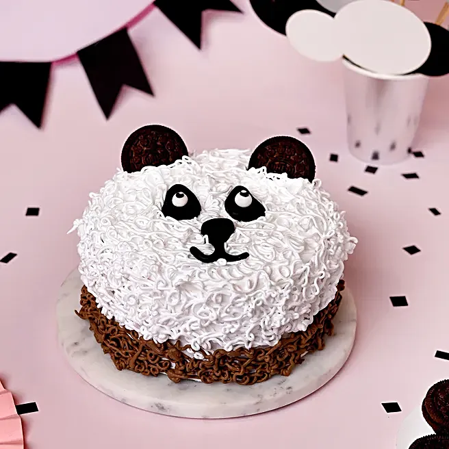

Cake is more than just a dessert; it is a universal symbol of celebration and joy. From the simplest sponge to the most elaborate tiered creation, cakes rely on the science of leavening to transform humble ingredients like flour, sugar, and eggs into a light, airy crumb. The magic happens in the oven, where heat triggers chemical reactions that cause the batter to rise, filling the kitchen with an unmistakable, comforting aroma. Whether it’s a birthday, a wedding, or a simple afternoon tea, a slice of cake offers a moment of indulgence and a sense of occasion.
The versatility of cake is virtually limitless, allowing for an endless array of flavors, textures, and decorations. Beyond the classic vanilla and chocolate, cakes can be infused with citrus, spices, fruits, or nuts, and layered with everything from silky buttercream to tangy fruit preserves. The art of cake making also provides a canvas for creative expression through frosting techniques and intricate designs. Ultimately, cake is a culinary bridge that connects tradition with modern tastes, providing a sweet centerpiece for life’s most memorable milestones.